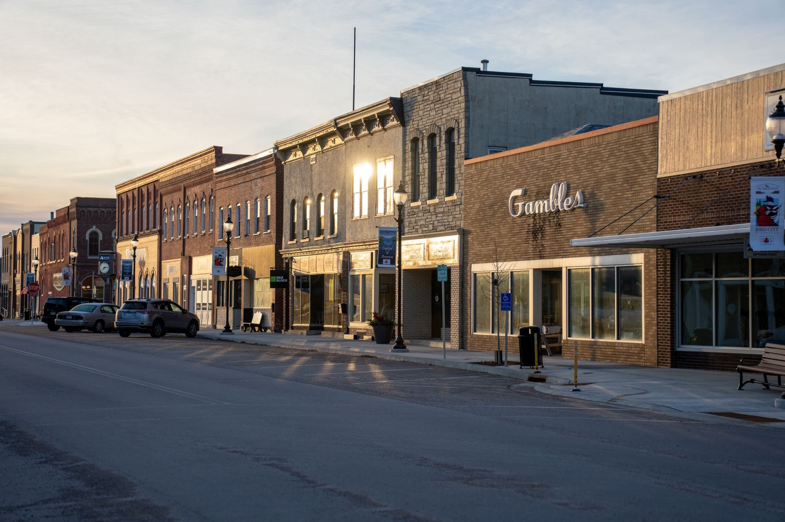

Meet Wren Ashcombe.
A respiratory therapist from Dunmore who got tired of watching families lose to the bills.
Wren grew up in Dunmore, where her father ran a lathe and her mother drove the school bus. She learned early that work should pay enough to live on.
For fourteen years she worked beside patients and their families. Then she saw how often the bill, not the illness, did the real damage.
Come to an eventThe road here.
- 1988
Born in Dunmore to a machinist and a school bus driver.
- 2006
First job at a tool and die shop, nights and weekends.
- 2011
Becomes a respiratory therapist at Millbrook General.
- 2019
Wins a seat on the county health board.
- 2023
Leads the campaign to reopen three rural clinics.
- 2026
Announces her run for Governor.

This biography is fictional.